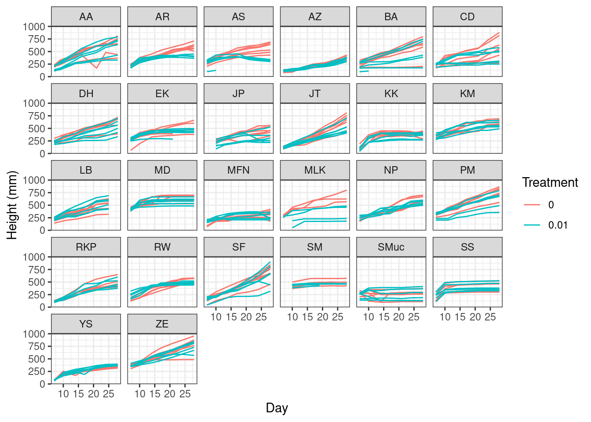
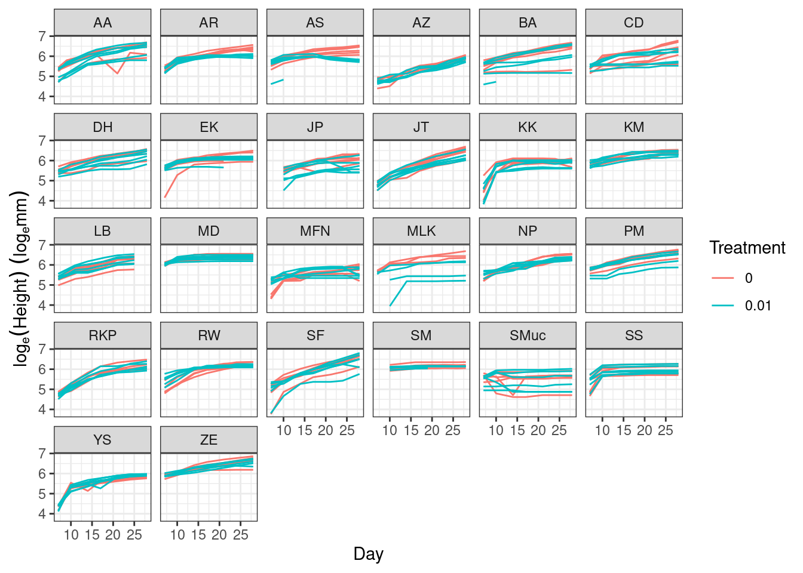
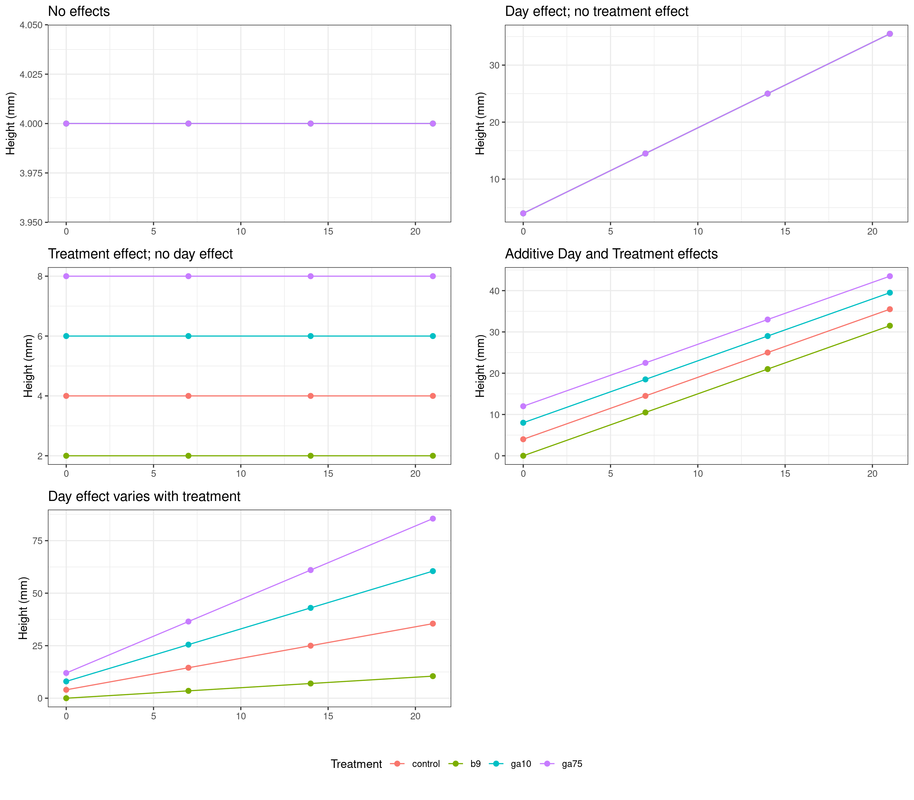
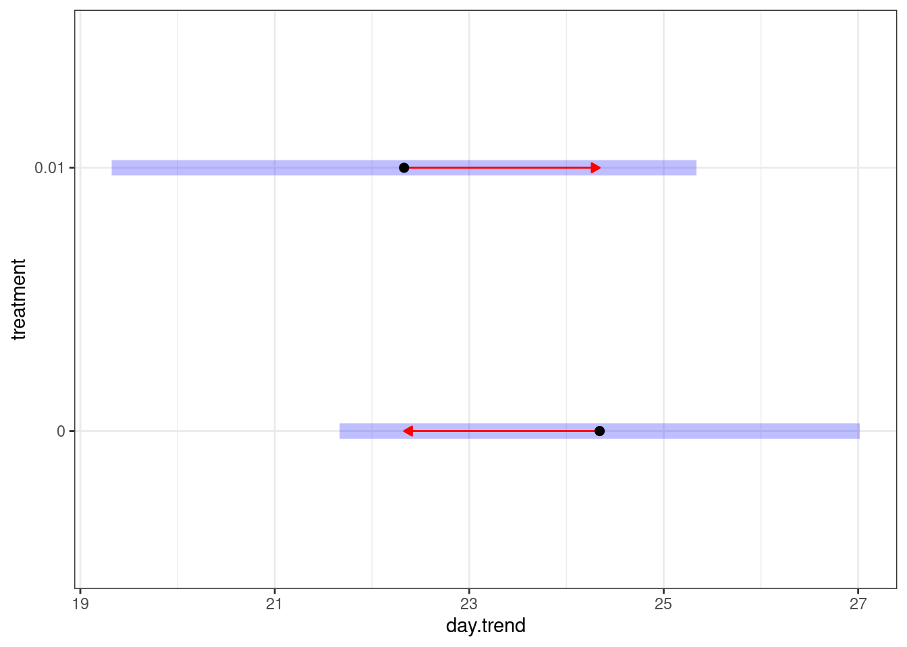
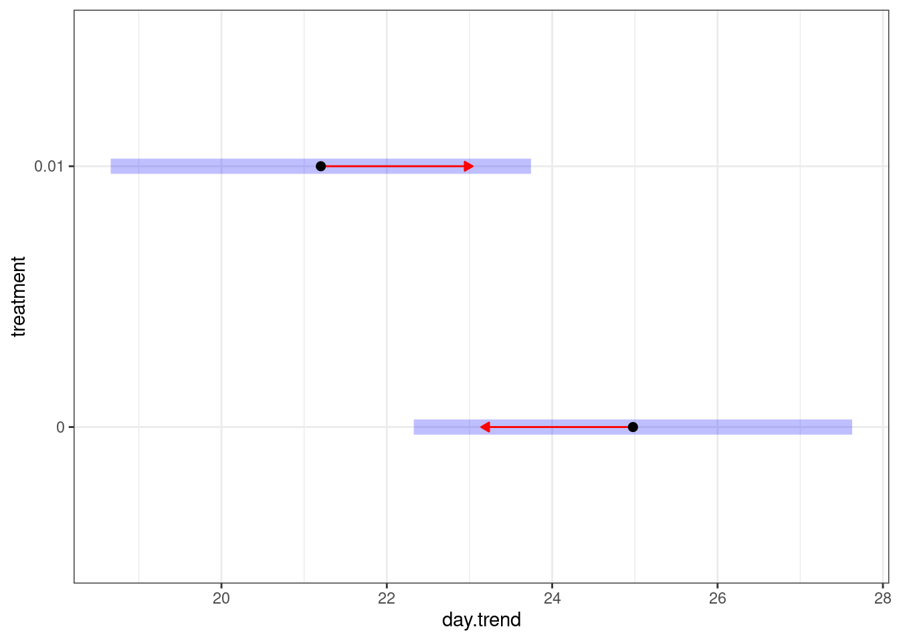
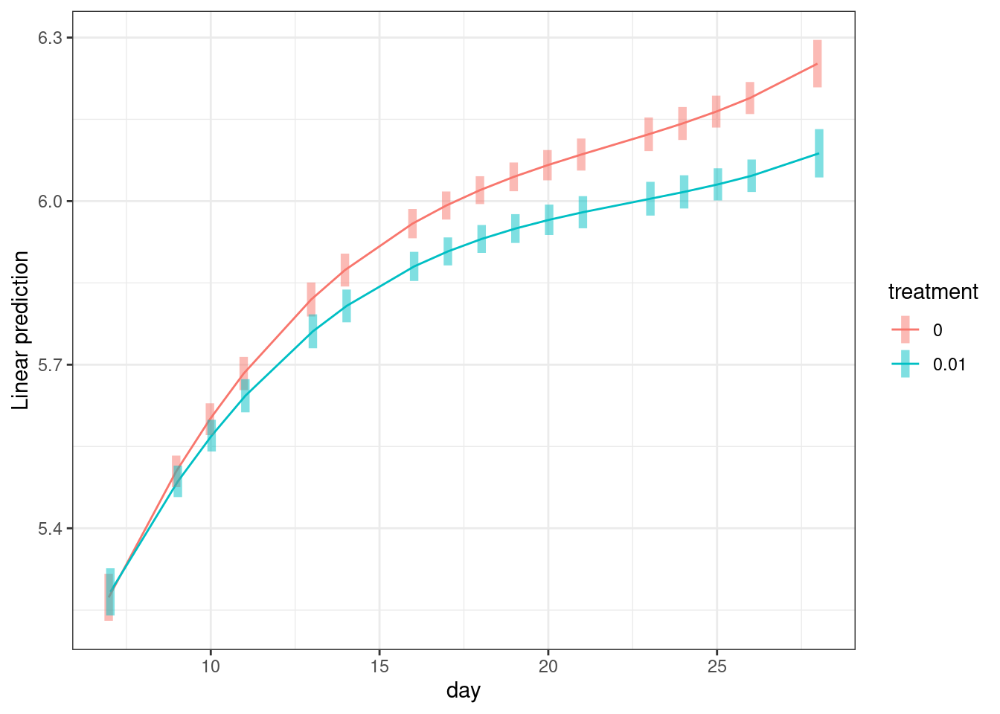
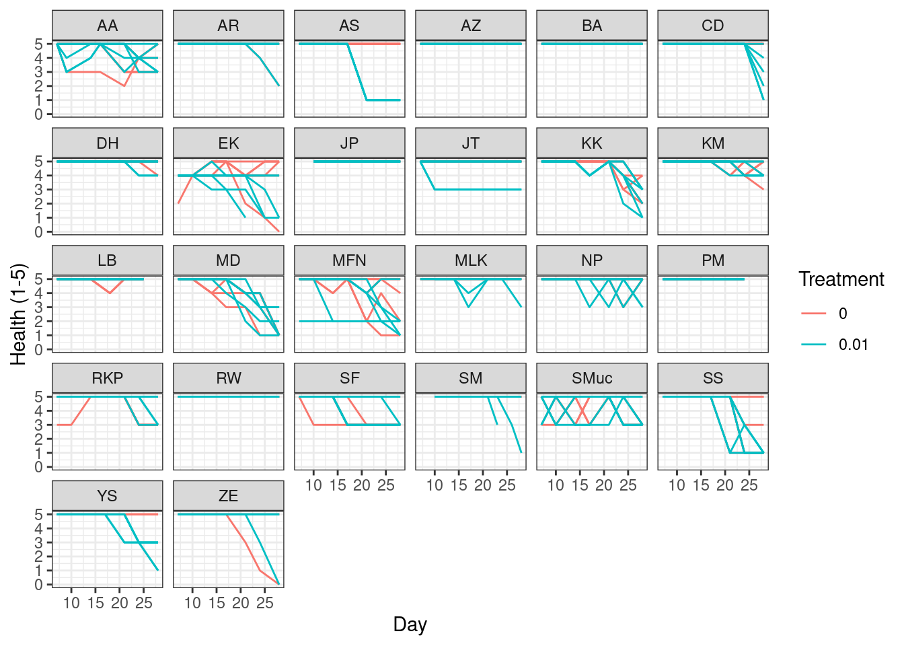

Plant Physiology: N addition experiment
Dr. Gavin Simpson and Dr. Maria Davis
October 2021
This file is hosted at: bit.ly/266nexp21
Getting started
To get started, open your web browser, head to rstudio.cloud and log in using your RStudio Cloud account.
Once you have logged in, start a New Project by clicking the button to the right of “Your Projects”

After you click the button, rstudio.cloud will deploy a new RStudio instance, which may take a minute or two, so be patient.
Once the RStudio instance is running, rename your project by clicking on the “Untitled Project” label at the top of the screen. Give the project a useful name, such as “biol 266”.

Opening a new script window
It is good practice to enter your R code into a R script. An R script is a plain text file that we save with the extension .R. All your code for the lab should go in here because
- you can save the file and all your work as you go along so you have a record of what you did,
- it is easier to edit your code and fix errors, mistakes, or typos in the script window, and
- you can share the script file if you need help to track down an error.
To start a new script, go to the File menu, then select New File > R Script

Or you can press Ctrl + Shift + Alt + N on Windows or Cmd + Shift + Option + N on a Mac.
Your RStudio screen should look like this

Installing R Packages
Once you have a new session running and named, click in the Console window by the prompt and run the code below by typing in the console exactly what is shown below and hitting Return
install.packages(c('purrr', 'readxl', 'tidyr', 'dplyr', 'forcats',
'ggplot2', 'tibble', 'stringr', 'emmeans'))This will take a few minutes to complete.
Load Packages
We need to load the packages we just installed so they are ready to use. You need to do this each time you start R and want to use these packages. The installation step you just performed does not need to be each time you start R.
Click in the script window. Enter the lines of code below into the script window. The hash character # allows you to enter comments, which R will ignore.
library('purrr')
library('readxl') # read from Excel sheets
library('tidyr') # data processing
library('dplyr') # mo data processing
library('forcats') # mo mo data processing
library('tibble') # creating data frames
library('stringr') # process strings (text)
library('ggplot2') # plotting
library('emmeans') # for post hoc comparisons
theme_set(theme_bw()) # Set plot themeOnce you have entered all those lines of code into the script window, move the cursor to the first line or click on it, and then press the following keys:
- On Windows press Ctrl + Enter
- On Mac press Cmd + Enter
This will send the current line of code to the console window and move cursor to the start of the next line. Continue hitting Ctrl + Enter or Cmd + Enter until you have sent each line of code into the console. As you do so, R will load each package; some messages will be printed to the console, but this is OK as long as you do not see any Errors.
From now on, enter the code in the shaded grey boxes into the Script window and use Ctrl + Enter or Cmd + Enter to send the code to the Console. Whenever R produces output, it should match (or be similar to; you will see output for your data) the text shown in the outlined boxes where each line starts with ##.
Note that the output in the console won’t have the ##, these are just to indicate output in this document.
Upload data
Before we can work with the data from the experiment, we will need to upload them to our rstudio.cloud project. Make sure you have downloaded the f21n2add.xlsx file from UR Courses and that you have it somewhere on your local computer. Next, make sure the Files tab is selected in the lower right quarter of the application, and locate the Upload button

Click the Upload button — this will bring up the Upload files dialogue box

Click the Choose file button — this will bring up the file chooser on your computer. In the file chooser, navigate to where you saved the f21n2add.xlsx file and open it in the chooser so that the file is listed next to the Choose file button, as shown below

Once you have f21n2add.xlsx showing in the dialogue box, you can click OK to upload the file to rstudio.cloud.
When you have uploaded the file, your Files pane should list the f21n2add.xlsx file as shown below

Saving your work
At this point, it is worth saving your script. Find the single disk icons in the main menu or the menu for your script

Click either of these icons to save the file. The first time you do this you’ll be prompted to enter a file name — use something memorable and be sure to give it the extension .R. In the image below I named my script biol266-n-exp.R.

Then click Save.
Be sure to save your work regularly during class. You can use Ctrl + s on Windows and Cmd + s on Mac to save changes you make to your script, or click on the disk icon as before.
Load Data
The experimental data exist in f21n2add.xlsx, an Excel workbook. We’re going to work with all the data collected by everyone that took part in the experiment. To do this, we need to load the data from each sheet in turn, which we do with an iterator using the map() function to call read_excel() on each sheet name in turn
fname <- "f21n2add.xlsx"
sheets <- excel_sheets(fname) %>%
set_names()
plants <- map(sheets, read_excel, path = fname)We need to do a little cleaning of the data before we can combine all the sheets into a single object for analysis. The data cleaning requires a couple of functions
## fixes the sheet names to clean the up a bit
fix_names <- function(x) {
nms <- names(x) %>%
str_trim(side = "right") %>%
str_to_lower() %>%
str_replace_all(pattern = ": ", replacement = ":") %>%
str_replace_all(pattern = "\\(mm\\)", replacement = "") %>%
str_replace_all(pattern = "heatlh", replacement = "health")
names(x) <- nms
x
}
## wrapper around the two pivot operations needed to get the data
## we want them
pivot_fun <- function(x) {
x <- pivot_longer(x,
-(treatment:plantid),
names_to = c("variable", "day"),
names_sep = ":",
names_transform = list(day = as.integer))
x <- pivot_wider(x, names_from = variable, values_from = value)
x <- mutate(x, id = paste(treatment, plantid, sep = "_"))
x <- mutate(x,
treatment = as.factor(treatment),
treatment = fct_relevel(treatment, "0"))
x
}Copy and paste these functions into your script and then highlight them in the script and run them within R so that thay are available for use in your session.
Now we can clean up the column names in the sheets
and finally do the two pivot operations you saw in the lab analysis videos, to get the data exactly how we want them
Next we need to combine all of the processed data objects in plants into a single data frame, rather than a list of separate data frames as it is currently. We start by stroing some info about the sheets and how many rows of data each has
sheet_names <- names(plants) # names of sheets
obs_per_sheet <- map(plants, nrow) # how many obs ber sheetthen we combine the sheets and add in an extra variable observer (who did the experiment), as well as modifying the id variable and setting the reference level of the treatment factor to be the control level.
plants <- bind_rows(plants) %>%
mutate(observer = rep(sheet_names, times = obs_per_sheet),
id = paste(observer, id, sep = '_'),
treatment = fct_relevel(treatment, 'control'))## Warning: Unknown levels in `f`: controlOK, that’s a lot of data processing. Let’s look at the data.
Plant height
We can plot the plant height data over time using the following code
ggplot(plants, aes(x = day, y = height, group = id,
colour = treatment)) +
geom_line() +
facet_wrap(~ observer) +
labs(y = 'Height (mm)', x = 'Day', colour = 'Treatment')## Warning: Removed 78 row(s) containing missing values (geom_path).
Note, we specify the data object (plants) and the mapping of variables to axes and the colour channel. We want to group the data for each plant and draw lines through the observations to better show how the height of each plant changed over time. We indicate this grouping via the group aesthetic, which we set to the id variable we created earlier. We also draw the data for each observer in it’s own panel, which ggplot calls faceting. The final line adds some nice labels to the plot.
Some preliminary analysis suggests we need to model plant height on the log scale; bigger things get bigger more quickly than smaller things. As such we should look at the data on that scale too
ggplot(plants, aes(x = day, y = log1p(height), group = id,
colour = treatment)) +
geom_line() +
facet_wrap(~ observer) +
labs(y = expression(log[e](Height) ~ (log[e]*mm)), x = 'Day', colour = 'Treatment')## Warning: Removed 78 row(s) containing missing values (geom_path).
The log1p() function adds 1 to each observation of plant height before taking logs, as there are some 0 height plants. The value log(0) is minus infinity, something thats not a helpful number and which can’t easily be represented in the computer in a way that we can include it in the model. Hence adding 1 to all values means we have no zero values in the data before we log transform them.
The final thing we’ll do before we start analysing the data, just to simplify things, is to take only those rows of data where we have a height measurement, excluding all the NA values in the height variable. We do this by filtering the plants object
ANCOVA
The model we are fitting is sometimes called an analysis of covariance or ANCOVA, which is another special case of a linear model that can also be fitted using the lm() function. In an ANCOVA, we control for the effects of a continuous variable whilst interest is on a categorical treatment effect.
Potential results
As before, it is helpful to think about the kinds of result we might expect from the statistical analysis. When considering the plant height data we could think of five basic types of result:

We specify the model structure using a symbolic formula. The formula we’ll use is
height ~ day * treatment + observerThe response (dependent) variable is on the left hand side of the ~ (the tilde symbol). This is the variable we wish to explain. The right hand side of the formula contains the independent variables in the model. Here, the independent variables represent the experimental setup. In addition we have + observer, which allows for a different mean plant height for each observer; we do this as there are likely to be differences between each student’s experimental set-up (temperature, amount of light, soil, etc) that will lead to systematic variation between observers. In a more formal analysis, we’d handle this using what are known as random effects, but here we keep things simple and just consider observer as a fixed offset and we don’t investigate any interactions between the experimental variables and observer, although that could be done.
Given our experimental design, the most complex model we can fit is one that allows for different growth rates (effects of day) for each treatment level. In other words we want to have a different growth rate for each combination of treatment.
Such a model implies a two-way interaction between day, and treatment. We indicate interactions in the formula using the * symbol.
As with the plot above, we are modelling log1p(height), which adds 1 to each height observation before applying a log transformation.
We can summarize the model to look for some key diagnostics of the fit
##
## Call:
## lm(formula = log1p(height) ~ day * treatment + observer, data = plant_h)
##
## Residuals:
## Min 1Q Median 3Q Max
## -1.65078 -0.13699 0.04573 0.18813 0.77800
##
## Coefficients:
## Estimate Std. Error t value Pr(>|t|)
## (Intercept) 5.224952 0.039522 132.205 < 2e-16 ***
## day 0.042637 0.001302 32.759 < 2e-16 ***
## treatment0.01 0.050423 0.034478 1.462 0.14376
## observerAR 0.022620 0.045151 0.501 0.61644
## observerAS 0.035486 0.045861 0.774 0.43915
## observerAZ -0.636327 0.045151 -14.093 < 2e-16 ***
## observerBA -0.065145 0.045861 -1.420 0.15561
## observerCD -0.097334 0.045151 -2.156 0.03122 *
## observerDH 0.013347 0.045151 0.296 0.76755
## observerEK 0.047509 0.045712 1.039 0.29878
## observerJP -0.276998 0.045227 -6.125 1.09e-09 ***
## observerJT -0.239127 0.045151 -5.296 1.31e-07 ***
## observerKK -0.271871 0.045151 -6.021 2.04e-09 ***
## observerKM 0.242694 0.045151 5.375 8.51e-08 ***
## observerLB 0.025755 0.047003 0.548 0.58378
## observerMD 0.404318 0.045151 8.955 < 2e-16 ***
## observerMFN -0.430936 0.045151 -9.544 < 2e-16 ***
## observerMLK -0.047728 0.053310 -0.895 0.37073
## observerNP 0.059796 0.045151 1.324 0.18553
## observerPM 0.228327 0.045152 5.057 4.64e-07 ***
## observerRKP -0.281395 0.045151 -6.232 5.55e-10 ***
## observerRW -0.002041 0.045151 -0.045 0.96395
## observerSF -0.111428 0.045151 -2.468 0.01367 *
## observerSM 0.136707 0.050535 2.705 0.00688 **
## observerSMuc -0.461499 0.045151 -10.221 < 2e-16 ***
## observerSS -0.073512 0.045151 -1.628 0.10364
## observerYS -0.468940 0.045151 -10.386 < 2e-16 ***
## observerZE 0.384105 0.045151 8.507 < 2e-16 ***
## day:treatment0.01 -0.007544 0.001843 -4.093 4.41e-05 ***
## ---
## Signif. codes: 0 '***' 0.001 '**' 0.01 '*' 0.05 '.' 0.1 ' ' 1
##
## Residual standard error: 0.2926 on 2064 degrees of freedom
## Multiple R-squared: 0.6242, Adjusted R-squared: 0.6191
## F-statistic: 122.4 on 28 and 2064 DF, p-value: < 2.2e-16Most of this isn’t very helpful in this state, except the omnibus F test which indicates if the total variance explained by all the model terms is significantly large relative to the unexplained variance.
Polynomial regression
If we think back to the plot of the data we made earlier, the relationship between plant height and time was non-linear, even on the log scale. The model we just fitted is a linear model, only capable of fitting straight lines and as such is not likely to follow the data closely. Statisticians call this bias. To try to reduce the bias we can fit a non-linear curve to the data using polynomials of day. Polynomials are \(day\), \(day^2\), \(day^3\), etc. To model a saturating curve — one which levels off — we might be able to simply us \(\text{day} + \text{day}^2\), but to allow for decreasing height at later days we will use a cubic polynomial, \(\text{day}^3\) as well. We can then compare all three models with increasing amounts of non-linearity and see which fits the data better.
First we create the polynomial models my updating the existing model. First we add first and second order polynomials and their interaction with treatment, which requires us to remove the day * treatment terms from the original model
Next we repeat the above but this time adding the third-degree polynomial
Now we have three models, we can compare them using an analysis of variance table or Akaike’s Information Criterion (AIC). We start with the analysis of variance table
## Analysis of Variance Table
##
## Model 1: log1p(height) ~ day * treatment + observer
## Model 2: log1p(height) ~ poly(day, 2) + treatment + observer + poly(day,
## 2):treatment
## Model 3: log1p(height) ~ poly(day, 3) + treatment + observer + poly(day,
## 3):treatment
## Res.Df RSS Df Sum of Sq F Pr(>F)
## 1 2064 176.71
## 2 2062 159.65 2 17.0606 112.003 < 2.2e-16 ***
## 3 2060 156.89 2 2.7614 18.129 1.568e-08 ***
## ---
## Signif. codes: 0 '***' 0.001 '**' 0.01 '*' 0.05 '.' 0.1 ' ' 1Here we are comparing the models sequentially from simplest to most complex. Each line is testing if the next most complex model is similar to the next in terms of the residual sums of squares (RSS), which will decrease as we make the model more complex. We see significant reductions in the RSS (lack of fit of the model) as we add the extra polynomial terms, suggesting that the cubic polynomial of day gives the best fit to the data.
We confirm this using AIC, where smaller values of AIC indicate better-fitting models
## df AIC
## m1 30 826.1537
## m2 32 617.6572
## m3 34 585.1395Again, we find that the cubic polynomial provides the better fit. As such, we will use this model, m3 to explore in more detail how plant height varied across the experimental period.
Treatments vs controls
To get more interpretable output we will again use estimate marginal means; remember that we are interested in the effect of day, a continuous variable, as well as the treatment effects. The day effect will be represented by curved lines (regression lines), the slopes of which reflect the average growth rate of plants in the combinations of treatments and cultivars. Because the lines are not linear, the rate of growth varies throughout the experimental period. These lines are often called trends hence we use the emtrends() function to estimate the marginal trends instead of the marginal means.
As before we will start by comparing the treated plants with the control plants. This time however we need to indicate the trend variable via argument var. In our case the trend variable is day (which is indicated by the name in quotes). We also want the growth rate on the original (not log) scale, so we add transform = "response", and because the growth rate is not constant we ask for the comparison of treatments at day 5
m3mt5 <- emtrends(m3, trt.vs.ctrl ~ treatment, var = "day",
transform = "response",
at = list(day = 5))
m3mt5## $emtrends
## treatment day.trend SE df lower.CL upper.CL
## 0 24.3 1.36 2060 21.7 27.0
## 0.01 22.3 1.53 2060 19.3 25.3
##
## Results are averaged over the levels of: observer
## Confidence level used: 0.95
##
## $contrasts
## contrast estimate SE df t.ratio p.value
## 0.01 - 0 -2.01 2.05 2060 -0.981 0.3268
##
## Results are averaged over the levels of: observerYou should be familiar with this output now. The $emtrends section contains similar outputs to the $emmeans sections we looked at earlier when analyzing the fresh weight of the plants. The main difference is in the interpretation of the numbers in the day.trend column, which replaces the emmean from before. The day.trend column contains estimates of the slope of the regression line for the day variable at day == 5.
The numbers in the column are the estimated change in the height of the plant for a single day of growth:
- If the
day.trendnumber is positive it means the plants in a treatment group increased in height over the experiment, and - if the
day.trendnumber is negative it means the plants in a treatment group decreased in height over the experiment.
The $contrasts section contains the same kind of comparisons of a treatments vs controls. Remember here that the estimate column contains the estimated difference in the slopes (growth rates) of the stated treatment and the control group. Hence the null hypothesis being tested is that the difference in slopes is equal to zero.
- A negative value in the
estimatecolumn means the average change in height in the stated treatment was lower than in the control group. In other words, the plants in that treatment group grew more slowly on average than the plants in the control group, and - A positive value in the
estimatecolumn means the plants in the that treatment group grew, on average, at a faster rate than plants in the control group.
As before, we can plot these estimated marginal trends using the plot() method:

This plot is similar to one we created in the earlier lab when we looked the data from the 2019 experiment:
- the black points are the estimated growth rates (regression slopes) for each treatment group,
- the 95% confidence interval around the estimated growth rate is shown by the pale blue bar, and
- the red arrows are approximate pairwise comparison regions — if arrows for a pair of treatments overlap one another we fail to reject the null hypothesis of equal growth rates for plants in the two treatments.
The main difference in this plot is that we no longer show the estimated marginal mean on the x axis. Instead the slope of the regression line (the growth rate) is plotted on the x axis. Remember how we interpret these numbers: the values are the estimated change, on average, in the height of a plant in single day of growth.
It look like there is little evidence in favor of different treatment effects at day 5. What about at a point later in the experiment? We can try day == 10 for example
m3mt10 <- emtrends(m3, trt.vs.ctrl ~ treatment,
var = "day",
transform = "response",
at = list(day = 10))
m3mt10## $emtrends
## treatment day.trend SE df lower.CL upper.CL
## 0 25.0 1.35 2060 22.3 27.6
## 0.01 21.2 1.30 2060 18.7 23.7
##
## Results are averaged over the levels of: observer
## Confidence level used: 0.95
##
## $contrasts
## contrast estimate SE df t.ratio p.value
## 0.01 - 0 -3.77 1.87 2060 -2.017 0.0438
##
## Results are averaged over the levels of: observerLook at the $contrasts component and see if there are significant differences at this point in the experiment.
As before, we can plot these estimated marginal trends using the plot() method:

You can repeat these commands for different days in the experimental period.
All this talk of estimated trends or slopes may be a little opaque, but we can plot the estimated regression lines to visualize the average growth rates of plants in each of the treatment groups using the emmip() function:

Here the formula means you want to show the treatment effects against day. The cov.reduce = FALSE part means that we want to plot for all values of day so that we get the full regression lines. Confidence intervals are added with CIs = TRUE — if you want to turn them off use CIs = FALSE.
Pairwise comparisons
If you want formal comparisons of the growth rates for all pairs of treatments, we can also do all pairwise comparisons using the emmtrends()function by using the pairwise option instead of trt-vs-ctrl. As before, we can assess the estimate growth rate (slope) at a given day, here for day == 5
## $emtrends
## treatment day.trend SE df lower.CL upper.CL
## 0 24.3 1.36 2060 21.7 27.0
## 0.01 22.3 1.53 2060 19.3 25.3
##
## Results are averaged over the levels of: observer
## Confidence level used: 0.95
##
## $contrasts
## contrast estimate SE df t.ratio p.value
## 0 - 0.01 2.01 2.05 2060 0.981 0.3268
##
## Results are averaged over the levels of: observerand for day == 20
## $emtrends
## treatment day.trend SE df lower.CL upper.CL
## 0 9.01 1.33 2060 6.40 11.62
## 0.01 5.96 1.20 2060 3.61 8.31
##
## Results are averaged over the levels of: observer
## Confidence level used: 0.95
##
## $contrasts
## contrast estimate SE df t.ratio p.value
## 0 - 0.01 3.05 1.79 2060 1.704 0.0886
##
## Results are averaged over the levels of: observerWe don’t see any differences in the estimated growth rates, but are there differences in the average plant height between the two treatments? We can test that using the emmeans() function, again using the pairwise option instead of trt-vs-ctrl. We use emmeans() here because we want estimates of the expected mean height for each treatment at a set of days, and not the slope of a trend line.
## Note: Use 'contrast(regrid(object), ...)' to obtain contrasts of back-transformed estimates## $emmeans
## day = 1:
## treatment emmean SE df lower.CL upper.CL
## 0 4.189 0.12314 2060 3.947 4.430
## 0.01 4.334 0.12367 2060 4.092 4.577
##
## day = 5:
## treatment emmean SE df lower.CL upper.CL
## 0 4.982 0.04277 2060 4.898 5.066
## 0.01 5.028 0.04296 2060 4.944 5.113
##
## day = 10:
## treatment emmean SE df lower.CL upper.CL
## 0 5.600 0.01487 2060 5.571 5.629
## 0.01 5.570 0.01480 2060 5.541 5.599
##
## day = 15:
## treatment emmean SE df lower.CL upper.CL
## 0 5.920 0.01453 2060 5.891 5.948
## 0.01 5.847 0.01448 2060 5.819 5.876
##
## day = 20:
## treatment emmean SE df lower.CL upper.CL
## 0 6.066 0.01418 2060 6.038 6.094
## 0.01 5.966 0.01422 2060 5.938 5.994
##
## Results are averaged over the levels of: observer
## Results are given on the log1p (not the response) scale.
## Confidence level used: 0.95
##
## $contrasts
## day = 1:
## contrast estimate SE df t.ratio p.value
## 0 - 0.01 -0.1454 0.1744 2060 -0.834 0.4046
##
## day = 5:
## contrast estimate SE df t.ratio p.value
## 0 - 0.01 -0.0462 0.0605 2060 -0.763 0.4454
##
## day = 10:
## contrast estimate SE df t.ratio p.value
## 0 - 0.01 0.0302 0.0209 2060 1.445 0.1485
##
## day = 15:
## contrast estimate SE df t.ratio p.value
## 0 - 0.01 0.0724 0.0205 2060 3.531 0.0004
##
## day = 20:
## contrast estimate SE df t.ratio p.value
## 0 - 0.01 0.1002 0.0201 2060 4.993 <.0001
##
## Results are averaged over the levels of: observer
## Note: contrasts are still on the log1p scaleThere is a lot of output here, but it follows that which we have seen previously; The $emmeans component contains the point estimates of plant height for the three treatments for each of the requested days, while the $contrasts component shows the pairwise comparisons for the treatment.
Are any of these pairwise comparisons statistically significant? Does which pairs of comparisons are significantly different change over time? What does this suggest about the effects of the treatment and the cultivar on the growth of the plants?
Plant health
The plant health data are not as easily analyzed as the plant height data; health is an ordered categorical response and that requires a more specialized model, such as a proportional odds model or assuming an ordered categorical response distribution. These models are non-trivial and as such we won’t explore the health data statistically here although doing so is most certainly possible.
Instead, we’ll just look at the data, which you can describe.
ggplot(plants, aes(x = day, y = health, group = id,
colour = treatment)) +
geom_line() +
facet_wrap(~ observer) +
labs(y = 'Health (1-5)', x = 'Day', colour = 'Treatment')## Warning: Removed 89 row(s) containing missing values (geom_path).
Number of internodes
We can analyse the number of internodes in a similar way to that for plant height, with an ANCOVA. The data can be plotted using
ggplot(plants, aes(x = day, y = log1p(internodes), group = id,
colour = treatment)) +
geom_line() +
facet_wrap(~ observer) +
labs(y = 'Number of internodes', x = 'Day', colour = 'Treatment')## Warning: Removed 78 row(s) containing missing values (geom_path).
First we filter the data
Then we fit the models, again allowing for polynomials of day
i1 <- lm(log1p(internodes) ~ day * treatment + observer, data = plants_i)
i2 <- update(i1, . ~ poly(day, 2) * treatment + observer)
i3 <- update(i1, . ~ poly(day, 3) * treatment + observer)And finally we can compre these to see which fits the data best
## Analysis of Variance Table
##
## Model 1: log1p(internodes) ~ day * treatment + observer
## Model 2: log1p(internodes) ~ poly(day, 2) + treatment + observer + poly(day,
## 2):treatment
## Model 3: log1p(internodes) ~ poly(day, 3) + treatment + observer + poly(day,
## 3):treatment
## Res.Df RSS Df Sum of Sq F Pr(>F)
## 1 2065 133.53
## 2 2063 122.50 2 11.0299 93.832 < 2.2e-16 ***
## 3 2061 121.14 2 1.3615 11.582 9.954e-06 ***
## ---
## Signif. codes: 0 '***' 0.001 '**' 0.01 '*' 0.05 '.' 0.1 ' ' 1## df AIC
## i1 30 238.70719
## i2 32 62.16913
## i3 34 42.76526Working from i3 then, we repeat some of the emtrends() and emmeans() code we used earlier but applied to i3 to investigate changes and difference in the number of internodes over time and between treatments.
Exporting images & files
To save a plot to a file, click on the Plots tab in the lower right window, and use the arrow icons to page through the plots to the one you want. Then click the Export

From the menu that appears choose Save as Image…

This brings up the Save Plot as Image dialogue box. Make the following changes:
- In the Image format box, select PNG
- In the File name box enter the file name you want for the image, include the
.pngextension - Change the height and width to suit
- You can set the height and width in pixel in the boxes to the top right of the dialogue box. If you change these you need to click the Update Preview button to redraw the plot
- Alternatively, you can use the hotspot to the bottom right corner of the plot to drag to resize. Click the Update Preview button to redraw the plot to the desired size

When you have made the required changes, click Save.
To export saved images or your script to your local machine, select the Files tab in the lower right window

Check the boxes next to the files you wish to export (download) as shown above, and then click the More button in the menu and select the Export… option.

Enter a filename — if you are exporting more than one file, RStudio will compress all the files into a single ZIP archive — if needed, but the provided name should be OK. Then click Download to download the file or the ZIP archive.
Logging Off
Your work will be saved in your rstudio.cloud workspace for some time after the lab. You will be able to resume from where you left off if you log in to your workspace at a late time. To be sure that the latest state of your work is saved, it would be best to log out of rstudio.cloud at the end of class today.
Locate your user name in the top right of the screen

Click your user name to open the menu

Click “Log out” to securely log out of rstudio.cloud.